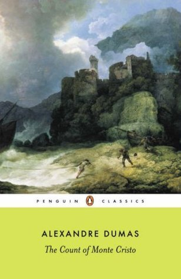

The Count of Monte Cristo
- Read on 2014-02-18
- Rating: ️️️️️
- Format: 🎧 (46 hours 56 minutes)
One of the best books I've experienced. Not a light read, but such detail on characters, environments, feeling, etc... just fabulous.
Now having read it a second time, I freaking love this book. It's just _so_ good. Yes, it's an insanely long book, but at the same time, the pacing of the book is perfect, and the insights into the characters, plot, world, surroundings, and storyline are awesome. Easily in my top 3 books of all time.
- Prior: Speaker for the Dead
- Next: Xenocide